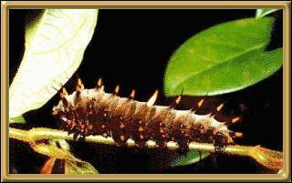
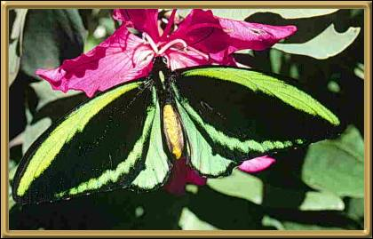

Photographer: Don Herbison-Evans

Photographer: Don Herbison-Evans


Photographer: Michael Cermak
The Cairns Birdwing Butterfly and it's caterpillar.
These butterflies, although beautiful are, it seems, considered pests as they are
competitive and attack other types of birdwings that are less common. They live
along the North-east Coast of Australia.